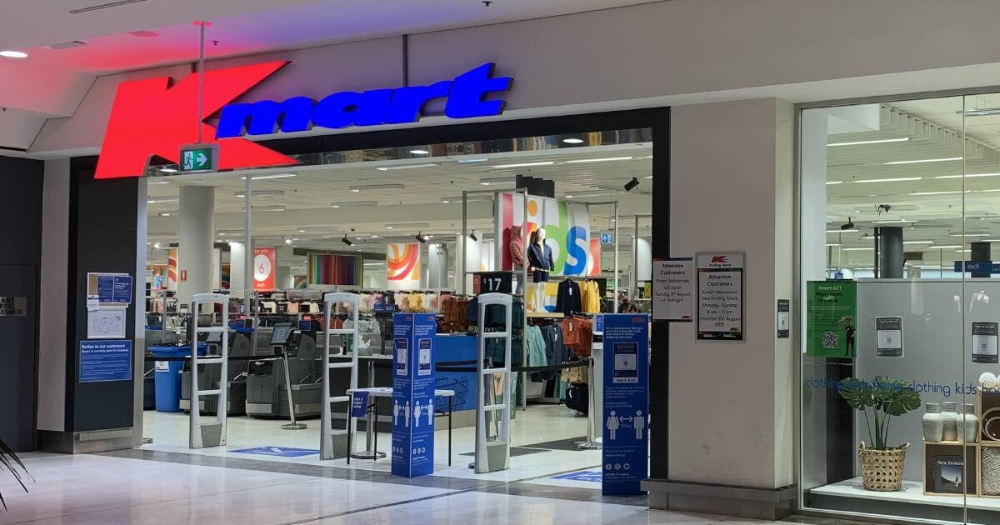

You turn down main street, and head to Stockland’s.
Kmart isn’t open, you need to unlock it.
Looking around you see a digital lock,
going to it you it is a puzzle lock,
you must solve the puzzle to open Kmart.
Or you could find the manager with the keys.
